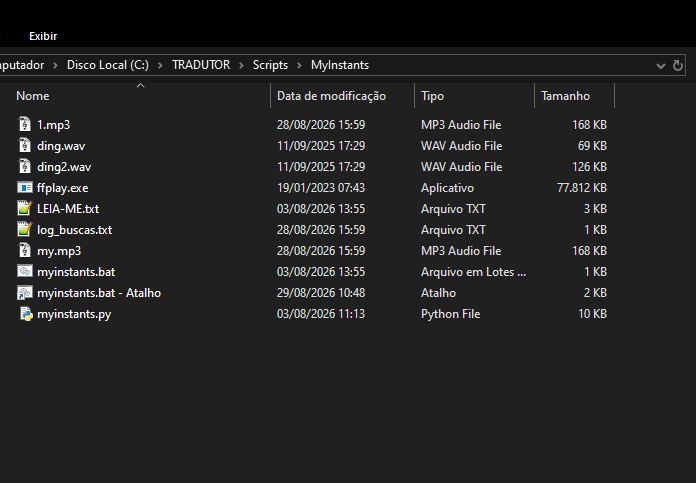
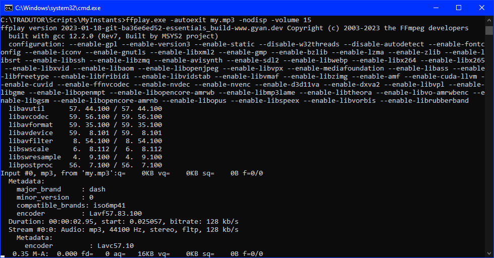
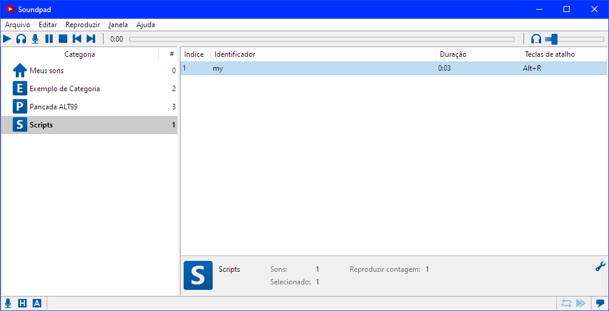
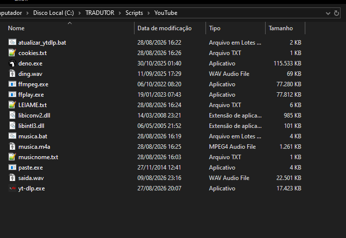
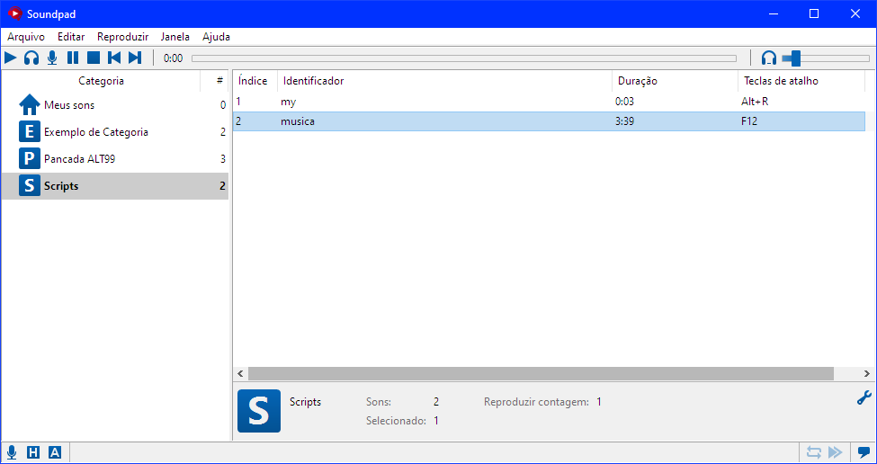
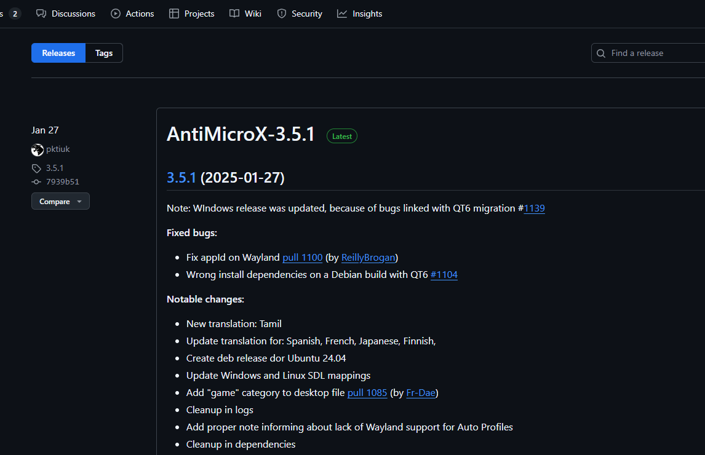
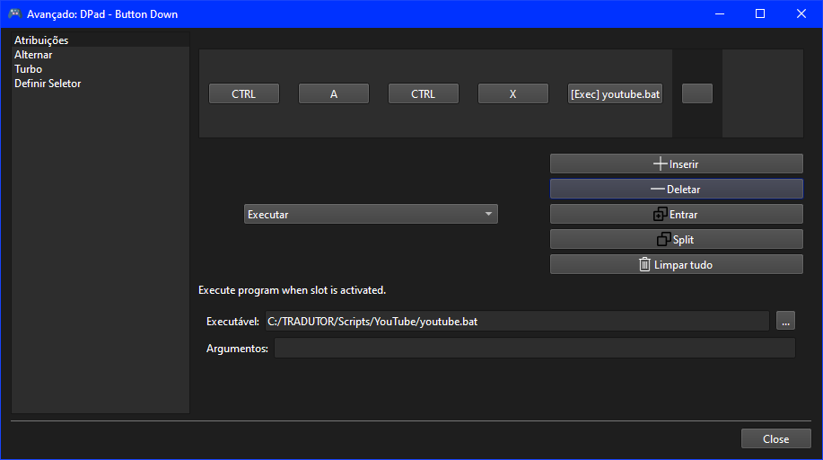
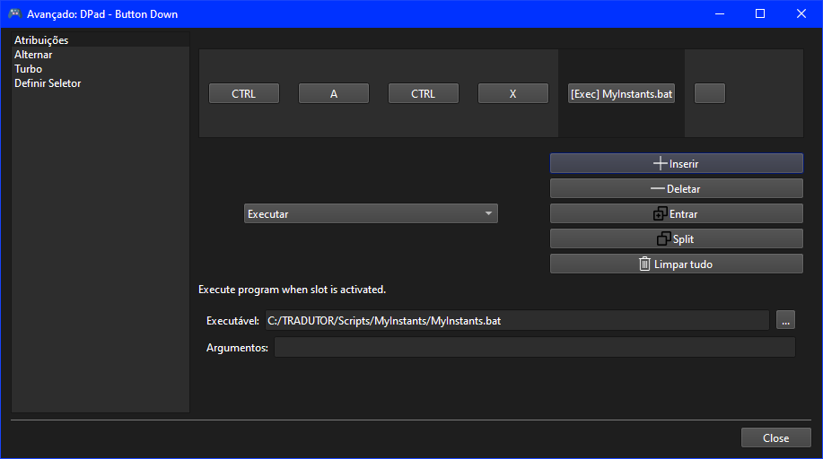
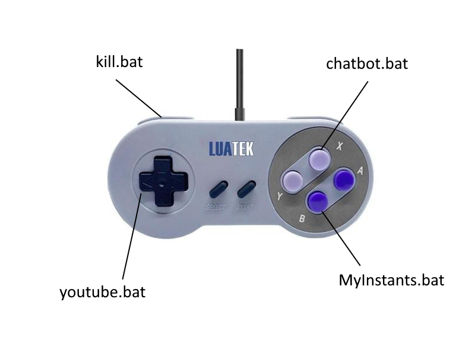

Introdução aos Scripts de Automação de Áudio
Neste guia, você aprenderá a utilizar scripts personalizados que desenvolvi para diversas finalidades, incluindo a obtenção de áudios do site MyInstants para uso em jogos e o download de áudios do YouTube. Os dois scripts já passaram por reescritas: o do MyInstants hoje roda em Python usando APIs nativas do Windows, e o do YouTube usa o yt-dlp com um sistema de cookies para evitar bloqueios. Ressalto que não há garantia de funcionamento perfeito em todos os sistemas, sendo recomendável utilizá-los por sua conta e risco, com cautela durante a configuração e execução.
Instalando o Python (pré-requisito)
O script do MyInstants roda em Python, então antes de tudo você precisa ter uma versão recente do Python instalada no Windows e disponível no PATH do sistema — sem isso, o myinstants.bat não consegue chamar o python pelo terminal e o script simplesmente não roda. Recomendo sempre usar a versão mais recente disponível, já que versões antigas podem não ter os módulos usados pelo script ou apresentar incompatibilidades.
- Acesse python.org e vá até a seção de Downloads.
- Baixe o instalador da versão mais recente do Python para Windows (botão amarelo "Download Python 3.x.x").
- Execute o instalador baixado.
- Muito importante: na primeira tela do instalador, marque a caixa
Add python.exe to PATH(ouAdd Python to PATH, dependendo da versão) antes de clicar em "Install Now". É esse passo que adiciona o Python ao PATH do sistema automaticamente. - Clique em "Install Now" e aguarde a instalação terminar.
- Ao final, se aparecer um botão "Disable path length limit", clique nele também — evita problemas com caminhos de arquivo muito longos no Windows.
- Feche e abra o cmd novamente (janelas já abertas não veem o novo PATH), e digite
python --version. Se aparecer o número da versão instalada, deu tudo certo.
Se você já instalou o Python sem marcar "Add to PATH", pode adicionar manualmente:
- Abra o Menu Iniciar, digite "variáveis de ambiente" e abra "Editar as variáveis de ambiente do sistema".
- Clique no botão "Variáveis de Ambiente...".
- Na lista de baixo ("Variáveis do sistema"), selecione a variável
Pathe clique em "Editar...". - Clique em "Novo" e adicione o caminho da pasta onde o Python foi instalado (algo como
C:\Users\SeuUsuario\AppData\Local\Programs\Python\Python3xx\). - Clique em "Novo" de novo e adicione a subpasta
Scriptsdesse mesmo caminho (ex.:C:\Users\SeuUsuario\AppData\Local\Programs\Python\Python3xx\Scripts\), usada para instalar pacotes como opip. - Clique em "OK" em todas as janelas para salvar.
- Feche e abra o cmd novamente e digite
python --versionpara confirmar que funcionou.
Com o Python instalado e no PATH, o myinstants.bat já consegue rodar normalmente — só falta instalar a dependência requests, explicada na seção seguinte.
Script para Download de Áudio do MyInstants
Este script permite baixar áudios do site MyInstants de forma automatizada, utilizando o conteúdo da área de transferência do Windows. Ele realiza uma busca no site, baixa o primeiro resultado encontrado e toca o áudio, salvando o arquivo como "my.mp3".
Faça o download do script aqui e extraia o zip na pasta C:\TRADUTOR\Scripts — os arquivos ficarão em C:\TRADUTOR\Scripts\MyInstants.

A versão atual foi reescrita em Python, eliminando as dependências externas do script original (paste.exe, além de ferramentas portadas do Linux como tail, wget, gawk, cut e sed). Entre as melhorias:
- Leitura do clipboard feita diretamente via API do Windows (
ctypes,CF_UNICODETEXT), o que corrigiu um bug de acentuação que fazia palavras como "faustão" virarem "faustÆo" ao ler o clipboard pelo PowerShell. - Correção de um bug na busca: o HTML salvo pelo navegador reescreve aspas simples como
', mas o servidor do MyInstants manda aspas simples literais na resposta real — o regex agora aceita os dois formatos. - Log de diagnóstico automático (tamanho e início da resposta) quando nenhum resultado é encontrado, o que facilita ajustes futuros caso o site mude novamente.
- Log de buscas infinito (
log_buscas.txt), com data e hora de cada busca, sempre acrescentando ao final sem apagar o histórico. - Rotação dos últimos 4 mp3 baixados (
1.mp3a4.mp3) mantida, igual ao script original. - Barras "/" são removidas do texto do clipboard antes da busca (ex.: "//teste" vira "teste").
- O console agora mostra, em tempo real, cada etapa: leitura do clipboard, URL de busca, código HTTP, link da página do som, link do mp3, bytes baixados, rotação de arquivos, etc.
Com o Python já instalado (veja a seção anterior), abra o cmd e instale a única dependência externa do script:
Como usar: copie o nome de um meme ou áudio (CTRL+C) e dê um duplo clique em myinstants.bat. O script busca no myinstants.com, baixa o primeiro resultado e toca, salvando o áudio como "my.mp3".

Arquivos gerados: my.mp3 (último som baixado), 1.mp3 a 4.mp3 (histórico rotativo) e log_buscas.txt (log infinito de buscas).
Para facilitar o uso em jogos, adicione o arquivo "my.mp3" ao Soundpad e configure um atalho, como ALT+R. Após ouvir o áudio nos fones de ouvido, pressione o atalho para reproduzi-lo no Soundpad, transmitindo-o pelo microfone virtual.

Para automação com um único botão, a configuração do AntiMicroX será abordada em uma seção posterior.
Script para Download de Áudio do YouTube
Este script (musica.bat) lê o texto que estiver na área de transferência do Windows (o que você copiou com CTRL+C), remove "//" do texto se houver, usa o resultado como termo de busca no YouTube, baixa o áudio do primeiro resultado com o yt-dlp e toca um "ding" de aviso seguido do áudio baixado.
Faça o download do script aqui e extraia o zip na pasta C:\TRADUTOR\Scripts — os arquivos ficarão em C:\TRADUTOR\Scripts\YouTube.

Para que serve o cookies.txt: o YouTube às vezes bloqueia o yt-dlp pedindo confirmação de que "você não é um robô". Para evitar isso, o script usa um arquivo de cookies que faz o yt-dlp se passar pelo seu navegador logado. Se o script parar de funcionar (erro de login, captcha, "Sign in to confirm you're not a bot"), o cookies.txt provavelmente expirou e precisa ser gerado de novo.
Como gerar o cookies.txt (Chrome): instale a extensão "Get cookies.txt LOCALLY" na Chrome Web Store, faça login na sua conta do YouTube/Google, acesse youtube.com logado, clique no ícone da extensão, exporte os cookies do site atual no formato Netscape e renomeie o arquivo baixado para "cookies.txt", movendo-o para a pasta do musica.bat.
Como gerar o cookies.txt (Firefox): o processo é o mesmo, usando uma extensão equivalente disponível na loja de complementos do Firefox (ex.: "Get cookies.txt LOCALLY" ou "cookies.txt").
Observações importantes: use uma conta secundária/dedicada para gerar os cookies, se possível, e nunca compartilhe o cookies.txt com ninguém — ele dá acesso à sua sessão logada do Google/YouTube. Os cookies expiram de tempos em tempos; se o download começar a falhar, gere um novo cookies.txt repetindo os passos acima.
Atualizando o yt-dlp: o YouTube muda seu site com frequência, o que às vezes quebra versões antigas do yt-dlp. O atualizar_ytdlp.bat resolve isso baixando a versão mais recente do yt-dlp.exe automaticamente — use-o quando o script parar de baixar áudio do nada, quando aparecer erro de formato ou extração, ou periodicamente como manutenção preventiva. Basta colocá-lo na mesma pasta do yt-dlp.exe e dar dois cliques.
Solução de problemas: "Nenhum termo de busca encontrado" significa que nada foi copiado antes de rodar o script; erros de login/robô pedem um novo cookies.txt; erros de formato ou extração pedem para rodar o atualizar_ytdlp.bat; se nenhum áudio tocar, confira se ffplay.exe, ding.wav e yt-dlp.exe estão na mesma pasta do musica.bat.
Para usar o áudio no Soundpad, adicione o arquivo baixado e configure um atalho, como F12.

Automação com AntiMicroX
Para automatizar a execução dos scripts, recomendo usar um joystick USB genérico, como um modelo de SNES, compatível com o programa AntiMicroX.

Faça o download do AntiMicroX no site oficial: https://github.com/AntiMicroX/antimicrox/releases. Configure atalhos para cada tecla do joystick, associando macros que executam CTRL+A e CTRL+C para copiar o texto para a área de transferência, seguidos da execução do script correspondente.

Por fim, configure um atalho para o myinstants.bat, que é especialmente útil para downloads rápidos de áudios do MyInstants.

Automação com AutoHotkey (alternativa sem joystick)
Se você não tem um joystick USB e prefere usar só o teclado, dá para conseguir o mesmo resultado com o AutoHotkey, um programa gratuito de automação e criação de atalhos de teclado para Windows. A ideia é a mesma do AntiMicroX: um atalho seleciona o texto, copia para a área de transferência e roda o script — só que aqui os atalhos são combinações de teclado, como CONTROL+WINDOWS+F1 para o MyInstants e CONTROL+WINDOWS+F2 para o YouTube.
Como instalar o AutoHotkey:
- Acesse autohotkey.com e clique em "Download".
- Baixe a versão mais recente (v2), que é a recomendada atualmente pela própria documentação oficial.
- Execute o instalador baixado e siga o assistente com as opções padrão.
- Ao final da instalação, o AutoHotkey já fica pronto para rodar arquivos com extensão
.ahk— não precisa adicionar nada ao PATH.
Como criar o script dos atalhos:
- Clique com o botão direito em qualquer pasta (pode ser a própria
C:\TRADUTOR\Scripts) e escolha Novo > Script AutoHotkey. Se essa opção não aparecer no menu, crie um arquivo de texto comum e renomeie a extensão de.txtpara.ahk. - Dê um nome ao arquivo, por exemplo
atalhos.ahk. - Clique com o botão direito nesse arquivo e escolha "Editar Script" (ou abra com o Bloco de Notas).
- Apague o conteúdo padrão e cole o código abaixo, ajustando os caminhos dos
.batse necessário:
Nesse código, ^ significa Ctrl e # significa a tecla Windows, então ^#F1 é o atalho Ctrl+Win+F1. O Send "^a" seleciona todo o texto do campo onde você está digitando (Ctrl+A), o Send "^c" copia (Ctrl+C), o Sleep 100 dá uma pequena pausa para a cópia terminar, e o Run executa o script correspondente.
Como usar: salve o arquivo, dê um duplo clique nele para carregar os atalhos (vai aparecer um ícone verde na bandeja do sistema, perto do relógio) e, com o texto do meme ou música selecionado (ou o cursor no campo de texto), pressione CONTROL+WINDOWS+F1 para o MyInstants ou CONTROL+WINDOWS+F2 para o YouTube.
Dica: para os atalhos ficarem sempre ativos, sem precisar abrir o script manualmente toda vez que ligar o PC, coloque um atalho (Ctrl+C, Ctrl+V "colar como atalho") do arquivo atalhos.ahk na pasta de Inicialização do Windows (pressione Win+R, digite shell:startup e dê Enter para abrir essa pasta).
Para consultar mais opções de personalização, como outras teclas e combinações, a documentação oficial de referência de hotkeys fica em autohotkey.com/docs/v2/Hotkeys.htm.
Configuração Personalizada do Joystick

Eu configuro meu joystick da seguinte forma, utilizando um modelo genérico de SNES USB. Você pode usar qualquer joystick compatível com o AntiMicroX, incluindo controles originais de Xbox 360 ou PS4. Alternativas como o Stream Deck também são viáveis, mas devem ser configuradas por sua conta e risco. Boa sorte na implementação!